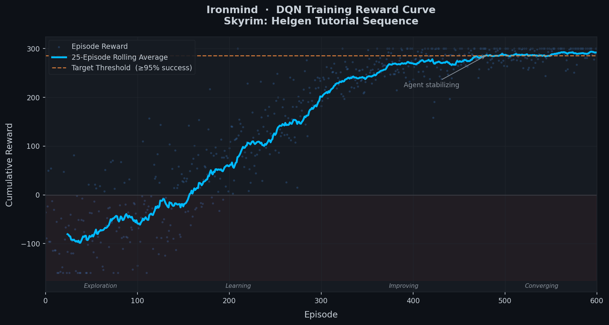

About Me
I am Ryan Johnson, a second-year AI Engineering student at Neumont University with a passion for incredibly intelligent systems that have unexpected behaviors and go beyond scripted behavior. What excites me about Artificial Intelligence Engineering is reward curves, instant feedback, training loops, and the unexpected behaviors. My work in AI Engineering focuses on Cybersecurity, Game AI-NPC Dev, Reinforcement Learning, and Robotics.
College Journey — Coursework by Theme
🤖 AI & Machine Learning
- AIE101 — Foundations of Artificial Intelligence
- CSC145 — Prompt Engineering
💻 Programming & CS
- CSC105 — Using Modern Operating Systems
- CSC110 — Introduction to Computer Science
- CSC125 — Logical and Computational Thinking
- CSC150 — Object Oriented Programming and Design
- CSC181 — Scripting and Automation
🌐 Web Development
- CSC210 — Intro to Web Presentation & Development
- MTM282 — Interactive Web Development
🗄️ Data & Databases
- DAT205 — Introduction to Data Science
- DBT130 — Databases I
- DBT230 — Databases II
- ITH215 — Networking I
📐 Mathematics
- MAT101 — Mathematics for Computer Science
- MAT105 — College Algebra
- MAT150 — Trigonometry
- MAT210 — Linear Algebra
- MAT260 — Statistics
🎓 Professional & General
- BUS101 — Personal Finance
- ENG110 — Introduction to English Composition
- FAC120 — Spoken Communications
- MGT101 — Introduction to Project Management
- MTM140 — Basics of Film
- NEU100 — College Success Strategies
- PRO100 — Introductory Software Projects
- PRO335 — Persistence Project
- SSC101 — Educational Learning Theories
Personal Interests
- 🎮 Gaming (Marvel Rivals, Windblown, Skyrim, and so many more)
- 💻 Programming (HTML5, CSS3, JavaScript, Python, Java, C++, SQL, Lua)
- 🎵 Music (Piano, Alto Sax, Electric/Acoustic Guitar, Producing, DAWs, Singing)
- 📚 Learning new technology and state of the art techniques.
My Skills
Built through coursework, personal projects, and self-study.
Programming
-
HTML5
-
CSS3
-
JavaScript
-
Python
-
Java
-
C++
-
SQL
-
Lua
Content Creation
- Video Editing
-
Instruments
- Acoustic Guitar
- Electric Guitar
- Alto Saxophone
- Piano
Managerial Skills
- Time Management
- Conflict De-escalation
- Leadership
Projects
A mix of personal AI research, game development, and automation work.
Ironmind
In Progress
A personal AI research project building a game-agnostic reinforcement learning agent capable of autonomously playing and mastering Action RPGs. The agent uses a modular architecture: a Perception Module to interpret screen state, a Decision Module (neural network) for real-time combat decisions, and an Action Interface Layer to inject keyboard and mouse inputs — zero hardcoded behavior trees or scripted actions.
Goal: ≥95% success rate over 1,000 simulated engagements. Primary test environment: The Elder Scrolls V: Skyrim (Helgen tutorial sequence via Deep Q-Network).
Roblox ARPG (Untitled)
In DevelopmentA souls-like Action RPG built in Roblox Studio featuring an open world with exploration, quests, and dialogue systems. The core differentiator: bosses are powered by AI models that observe and adapt to each player's combat style, countering strategies over successive encounters. No two players face the same fight.
Emphasizes emergent challenge — the AI evolves its tactics based on real encounter data, making boss fights genuinely dynamic and replayable.
Eve Echoes OCR Bot
Archived
A Discord bot built for the mobile MMO Eve Echoes that
processed in-game screenshots via OCR (Optical Character
Recognition), extracting text from the game UI and converting
in-game timestamps into Unix format for Discord's native dynamic
time display (/t:<unix>:F) — handling
timezone differences automatically for fleet coordination.
Archived after the game's UI layout became inconsistent with the OCR pipeline. A solid exercise in image processing, automation, and Discord API integration.
Education
Neumont University — Bachelor of Science in Artificial Intelligence Engineering
Winter 2026 — Current
- MTM140 — Basics of Film
Fall 2025
- DBT230 — Databases II
- MAT150 — Trigonometry
- MAT210 — Linear Algebra
- MTM282 — Interactive Web Development
- PRO335 — Persistence Project
Summer 2025
- CSC125 — Logical and Computational Thinking
- CSC210 — Intro to Web Presentation & Development
- DAT205 — Introduction to Data Science
- ENG110 — Introduction to English Composition
- MAT260 — Statistics
- PRO100 — Introductory Software Projects
Spring 2025
- BUS101 — Personal Finance
- CSC181 — Scripting and Automation
- DBT130 — Databases I
- FAC120 — Spoken Communications
- MAT105 — College Algebra
Winter 2025
- CSC150 — Object Oriented Programming and Design
- ITH215 — Networking I
- MAT101 — Mathematics for Computer Science
- MGT101 — Introduction to Project Management
Fall 2024 — Start
- AIE101 — Foundations of Artificial Intelligence
- CSC105 — Using Modern Operating Systems
- CSC110 — Introduction to Computer Science
- CSC145 — Prompt Engineering
- NEU100 — College Success Strategies
- SSC101 — Educational Learning Theories
Contact Me
If you would like to get in touch with me, use one of these methods below. Ordered in descending order by priority:
- Discord @ expl0deb0ss
- Email @ ahryguy@gmail.com
- Teams @ ryajohnson@student.neumont.edu
- LinkedIn @ Ryan Johnson
- GitHub @ Riddik1E90FF
Sources & References
Documentation and references for the technologies, tools, and concepts represented in this portfolio and its projects.
- MDN Web Docs contributors. (2024). HTML: HyperText Markup Language. Mozilla. https://developer.mozilla.org/en-US/docs/Web/HTML
- MDN Web Docs contributors. (2024). CSS: Cascading Style Sheets. Mozilla. https://developer.mozilla.org/en-US/docs/Web/CSS
- MDN Web Docs contributors. (2024). JavaScript. Mozilla. https://developer.mozilla.org/en-US/docs/Web/JavaScript
- Python Software Foundation. (2024). Python 3 documentation. https://docs.python.org/3/
- Oracle Corporation. (2024). Java SE documentation. https://docs.oracle.com/en/java/
- cppreference.com contributors. (2024). C++ reference. https://en.cppreference.com/w/
- W3Schools. (2024). SQL tutorial. https://www.w3schools.com/sql/
- Lua.org. (2024). Lua 5.4 reference manual. https://www.lua.org/manual/5.4/
- Roblox Corporation. (2024). Luau documentation. Roblox. https://luau.org/
- Rapptz. (2024). discord.py documentation. https://discordpy.readthedocs.io/en/stable/
- Simonini, T. (2022). Deep reinforcement learning course. Hugging Face. https://huggingface.co/learn/deep-rl-course/unit0/introduction
- Tesseract OCR contributors. (2024). Tesseract documentation. https://tesseract-ocr.github.io/